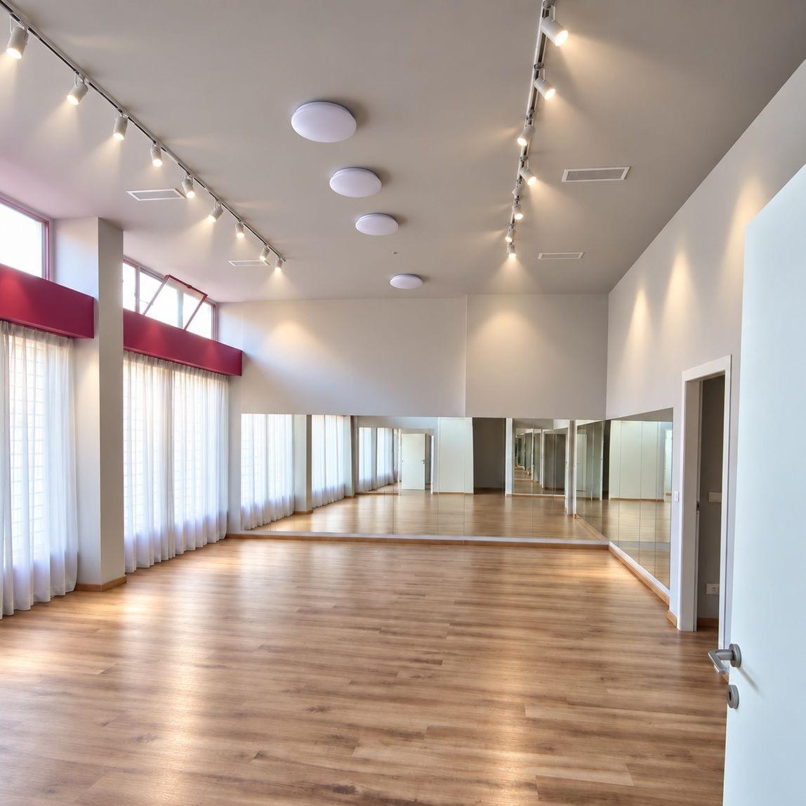

Canto
dai 4 ai 94 anni
Canto moderno per bambini, ragazzi e adulti, con la tecnica vocale e il coro. A fine anno si canta sul palco del saggio, accompagnati da una vera band di allievi.
Scuola di musica e di danza · Milano
A Musicopoli il talento non ha età.
Canto, strumenti, danza, inglese e le vacanze d'estate, per bambini, ragazzi e adulti: da più di trent'anni in Via Boifava, vicino al Gratosoglio, e a Piazza Buonarroti. La prima lezione di prova è gratuita.
4,9 su 150 recensioni Google
Tredici corsi, dai 4 ai 94 anni. Toccate un'età e si accendono quelli che fanno per voi.
| età | ||||||||||||||||
|---|---|---|---|---|---|---|---|---|---|---|---|---|---|---|---|---|
| Canto | ||||||||||||||||
| Strumenti | ||||||||||||||||
| Danza classica | ||||||||||||||||
| Danza moderna | ||||||||||||||||
| Hip hop e urban | ||||||||||||||||
| Balla in forma | ||||||||||||||||
| Yoga | ||||||||||||||||
| Zumba | ||||||||||||||||
| Pilates | ||||||||||||||||
| Inglese | ||||||||||||||||
| Campus in città | ||||||||||||||||
| Vacanze a Pinarella | ||||||||||||||||
| Camp a Chester |
A 94 anni: canto, strumenti, hip hop e urban, balla in forma, yoga, zumba, pilates, inglese.
I corsi
Lezioni con insegnanti che sono musicisti e ballerini, per chi parte da zero e per chi vuole farne un mestiere. La prima è sempre di prova, e gratis.
dai 4 ai 94 anni
Canto moderno per bambini, ragazzi e adulti, con la tecnica vocale e il coro. A fine anno si canta sul palco del saggio, accompagnati da una vera band di allievi.
dai 4 ai 94 anni
Lezioni individuali di chitarra classica, rock, blues e jazz, basso elettrico, tastiera, pianoforte classico e moderno, sassofono, flauto traverso, batteria, percussioni, armonica, violino. E da quest'anno la fisarmonica, anche partendo da zero.
Chi studia uno strumento o canto può sostenere gli esami del London College of Music (University of West London), a cui Musicopoli è accreditata.
dai 4 ai 15 anni
Postura, equilibrio, musicalità, espressività: un percorso di disciplina ed emozione. Non serve esperienza, basta la voglia di cominciare.
dai 4 ai 14 anni
Movimento, coreografie e tanta musica, per i più piccoli e per i ragazzi.
dai 6 ai 94 anni
Hip hop, commercial e gli stili street di oggi, sulle hit del momento. Per gli adulti il corso è gratuito.
dai 18 ai 94 anni
Ballare per stare bene, a ogni età.
dai 18 ai 94 anni
Respiro, equilibrio e calma.
dai 18 ai 94 anni
Un'ora di musica e movimento, per chi ha voglia di divertirsi.
dai 18 ai 94 anni
Postura, forza e flessibilità, con calma.
E naturalmente canto, strumenti, inglese e hip hop: per gli adulti c'è tutto, compreso un corso di hip hop gratuito.
dai 4 ai 94 anni
Corsi individuali, collettivi e di conversazione per bambini dai 4 anni, ragazzi e adulti, e la preparazione agli esami Cambridge: Starters, Movers, Flyers, KET, PET e First. Si parla tanto, per prendere la pronuncia giusta.
L'estate
Dal 1997 Musicopoli organizza vacanze per bambini e ragazzi: educatori sempre presenti dalla partenza al ritorno, e le famiglie aggiornate ogni giorno.
dai 6 agli 11 anni
A Milano, da giugno a settembre, nelle nostre sedi: laboratori di pittura, scultura, teatro, canto, danza, musica e cucina, la piscina una volta alla settimana, i musei e i parchi della città.
dai 6 ai 15 anni
Al mare a Pinarella di Cervia: musica, teatro, danza, pittura, scultura, cucina, sport in spiaggia, lezioni di strumento per chi vuole, e ogni anno una giornata intera a Mirabilandia. Anche come prima vacanza senza i genitori.
dai 12 ai 17 anni
In Inghilterra, nel campus dell'università di Chester: lezioni di inglese con insegnanti madrelingua in classi piccole, attività ogni pomeriggio e ogni sera, gite, e i nostri accompagnatori sempre con i ragazzi.
«Aspetto undici mesi per poter tornare!!!»
La storia
Musicopoli nasce nel 1991 in una scuola elementare del Gratosoglio, da un gruppo di musicisti professionisti: corsi di musica gratuiti per i bambini e sedute di musicoterapia per i bambini con disabilità.
Da allora siamo un'associazione di promozione sociale, senza scopo di lucro, e un presidio del quartiere: corsi a prezzi accessibili, laboratori gratuiti come Piccoli Chef e TrovoLavoro, e dal 2009 la sede di Via Boifava in concessione dal Municipio 5.
Qui, a 14 anni, ha cominciato a studiare canto Alessandro Mahmoud, in arte Mahmood, che nel 2019 e nel 2022 ha vinto Sanremo. Come lui, migliaia di ragazzi di ogni provenienza sono cresciuti con noi.
Il presidente è Andrea Cerati.
Le sedi
All'angolo con Via dei Missaglia. MM2 Abbiategrasso, tram 3 e 15, bus 79.

La nuova sede, dal 14 settembre 2026: una sala di danza nuova e luminosa. Bus 79.
A Piazza Buonarroti. MM1 Buonarroti.
4,9 su 150 recensioni Google
Personale qualificato attento ad ogni esigenza dei piccoli e dei grandi. Vengono fatte moltissime attività. Bimbi e ragazze/i vengono responsabilizzati attraverso il gioco, imparano ad essere puntuali e ordinati. Le famiglie sono aggiornate in tempo reale con piccoli video. Do un 10 e lode perché gli animatori riescono a fare integrare tutti, piccoli e grandi anche attraverso il gioco! Divertimento garantito! Complimenti a tutto lo staff di Musicopoli!
Un posto utilissimo al quartiere. I bimbi possono fare danza e gli adulti ginnastica. Si canta, si suona si studia Inglese con Insegnanti giovani ma competenti. […]
Esperienza stupenda, staff preparato e empatico, ben organizzati. I nostri figli si sono trovati benissimo sotto diversi aspetti tra cui: docenti inglesi coinvolgenti, atmosfera empatica ed allegra, gite varie e con spunti culturali, camere e ambienti puliti, cibo gradito, attività pomeridiane e serali divertenti, organizzazione e comunicazione con genitori ottima, accompagnatori professionali, allegri ed empatici. Grazie di cuore!
Un ambiente stimolante dove i miei figli stanno scoprendo la passione per la musica!
Vacanze Artistiche e sopratutto divertentissime!!! Organizzazione fantastica dagli spostamenti alle attività alle esigenze personalizzate, sempre con tanta gentilezza umanità e empatia. Gli animatori sono tutti davvero disponibili. Io sono felicissima che i miei figli condividono una settimana di vacanza all'anno con Musicopoli.
Recensioni pubbliche su Google, copiate parola per parola.
Orari e contatti
WhatsApp, 7 giorni su 7333 836 6044
| Lunedì | 9:00–23:00 |
|---|---|
| Martedì | 9:00–23:00 |
| Mercoledì | 9:00–23:00 |
| Giovedì | 9:00–23:00 |
| Venerdì | 9:00–23:00 |
| Sabato | 10:00–21:00 |
| Domenica | 10:00–21:00 |
Ingresso e parcheggio accessibili in sedia a rotelle.
La mappa è di Google: aprendola, Google riceve il tuo indirizzo IP e può usare i suoi cookie.